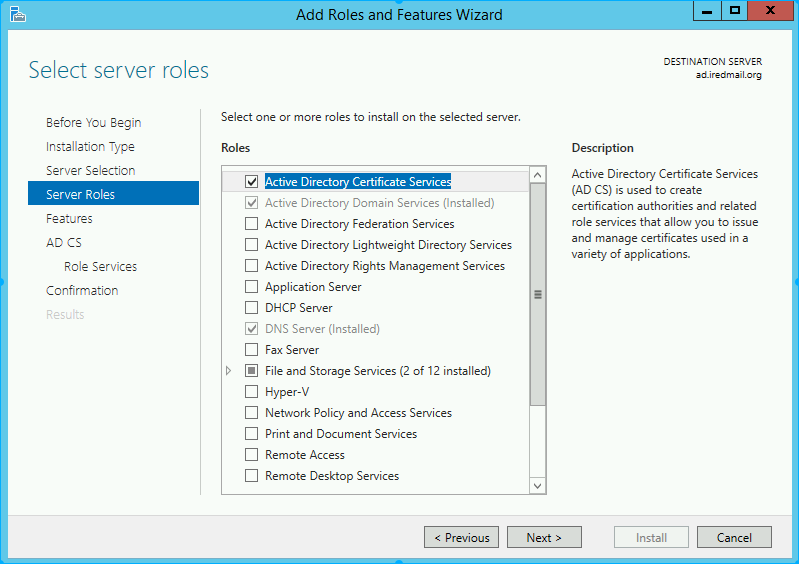
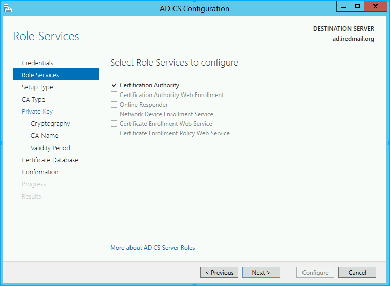
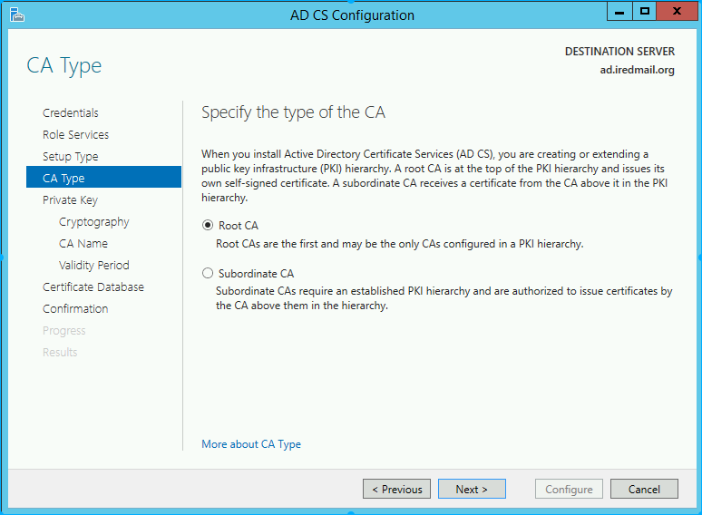
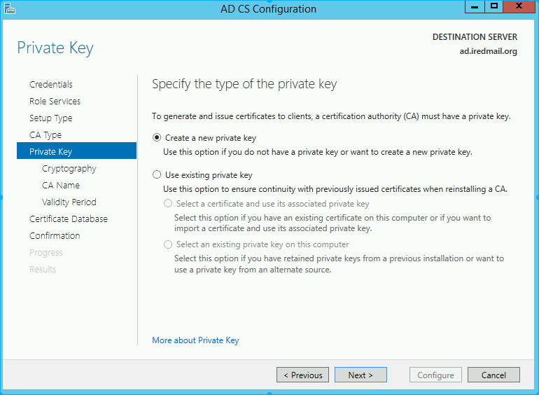
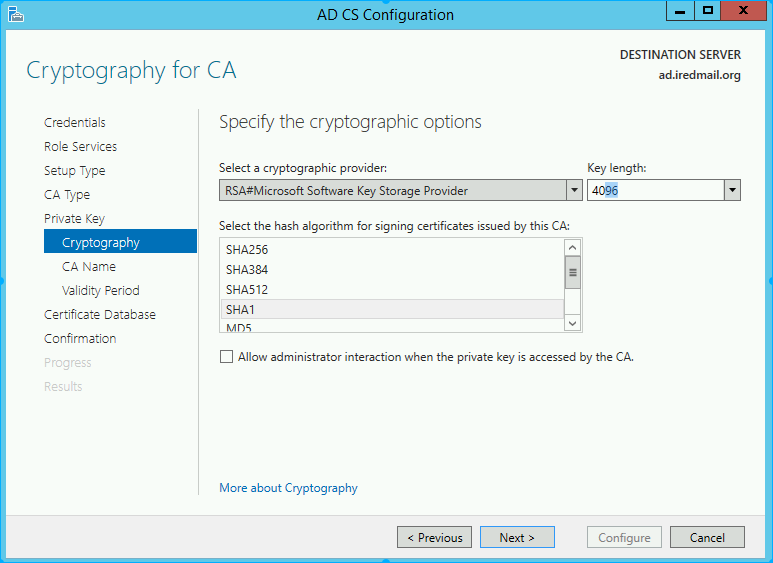
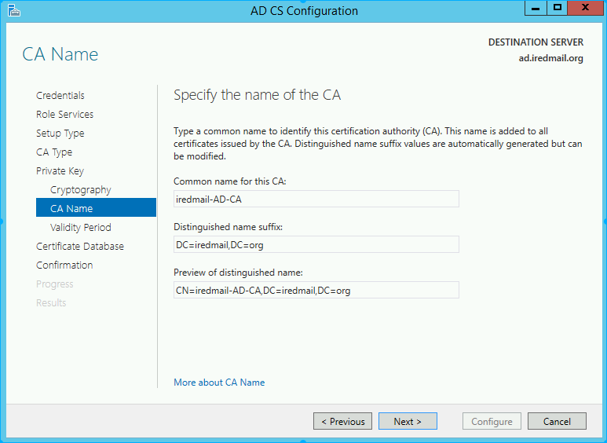
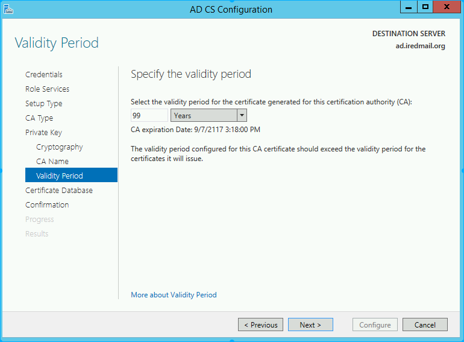
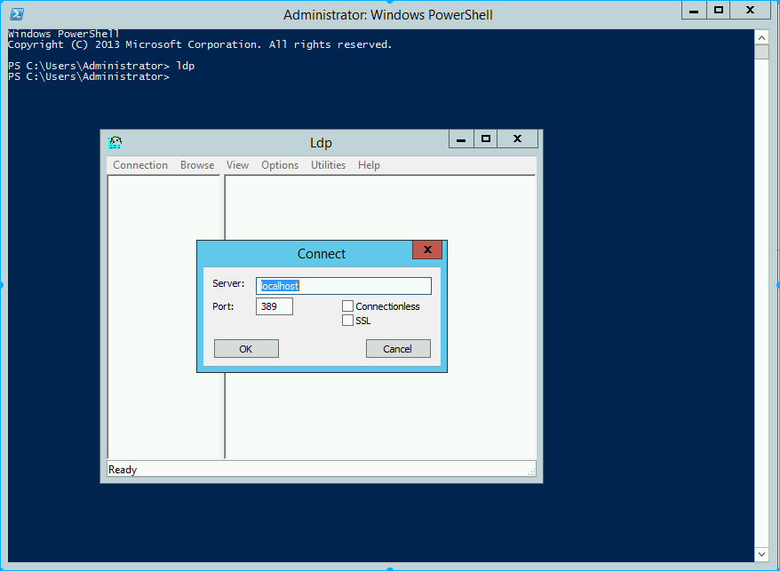
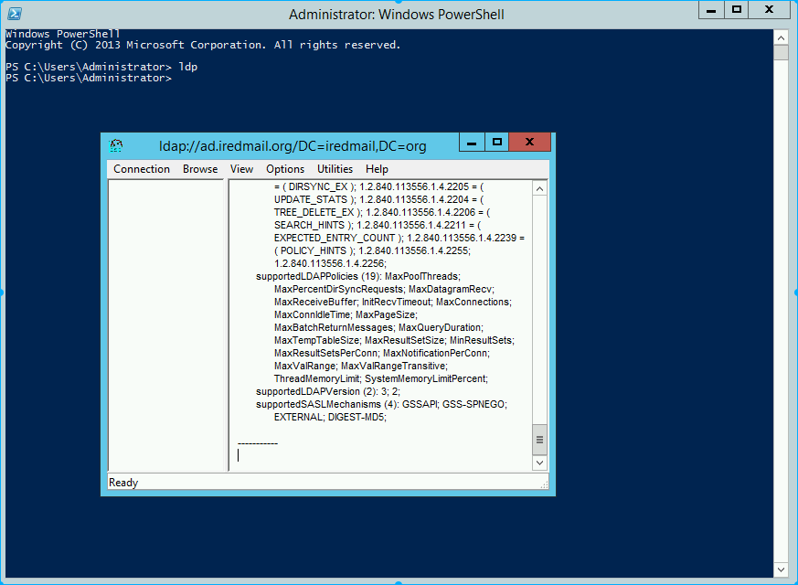

Windows Active Directory requires secure connection for updating user password from another host via LDAP protocol. In this tutorial, we will show you how to setup SSL support for Active Directory with a self-signed ssl cert.
This tutorial has been tested on:
If it works for you on different Windows Server version, please let us know.
Start on bottom-left corner of your Windows OS, click Server Manager.
Manage on top-right corner, click Add Roles and Features.
Next:
Role-based or feature-based installation. Click Next.

Active Directory Certificate Services from the list, and click Next.
Features page.

Certificate Authority and click Next.
Install to install selected roles/features.

Now let’s create a certificate using AD CS Configuration Wizard. To open the wizard, click on “Configure Active Directory Certificate Services on the destination server” in the above screen. And then click Close. We can use the currently logged on user azureuser to configure role services since it belongs to the local Administrators group. Click Next.










After restart system, we can connect to the LDAP server over SSL. Now let us try to connect to LDAP Server (with and without SSL) using the ldp.exe tool.
Connection strings for:
- LDAP:\\ad.iredmail.org:389
- LDAPS:\\ad.iredmail.org:636

